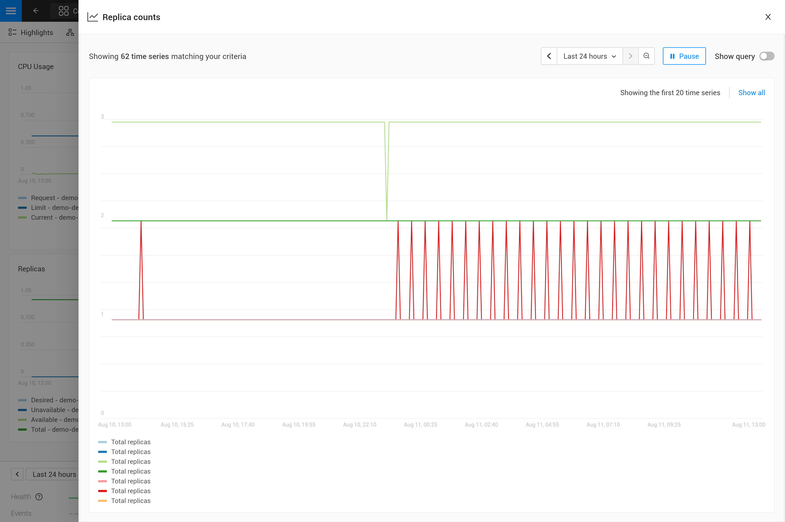

Fügen Sie benutzerdefinierte Diagramme zu Komponenten hinzu
Übersicht
SUSE® Observability bietet bereits viele Metrikdiagramme standardmäßig für die meisten Arten von Komponenten, die Kubernetes-Ressourcen darstellen. Zusätzliche Metrikdiagramme können jederzeit zu einem Satz von Komponenten hinzugefügt werden, wenn dies erforderlich ist. Beim Hinzufügen von Metriken zu Komponenten gibt es zwei Optionen:
-
Die Metriken werden bereits von SUSE® Observability erfasst, sind jedoch standardmäßig nicht auf einer Komponente visualisiert.
-
Die Metriken werden von SUSE® Observability noch nicht erfasst und sind daher noch nicht verfügbar.
Für Option 1 geben die folgenden Schritte Anweisungen, wie Sie eine Metrikbindung erstellen, die SUSE® Observability konfiguriert, um eine bestimmte Metrik zu einem bestimmten Satz von Komponenten hinzuzufügen.
Für Option 2 stellen Sie sicher, dass die Metriken in SUSE® Observability verfügbar sind, indem Sie sie über das Prometheus Remote Write-Protokoll an SUSE® Observability senden. Fahren Sie erst fort, nachdem Sie sichergestellt haben, dass die Metriken verfügbar sind, und fügen Sie dann die Diagramme für die Metriken zu den Komponenten hinzu.
Erstellen einer Metrikbindung
Als Beispiel werden die Schritte eine Metrikbindung für die Replica counts von Kubernetes-Implementierungen hinzufügen. Diese Metrikbindung existiert bereits standardmäßig in SUSE® Observability.
Erstellen Sie eine Skizze der Metrikbindung
Öffnen Sie die metricbindings.yaml YAML-Datei in Ihrem bevorzugten Code-Editor, um sie während dieses Leitfadens zu ändern. Sie können die CLI verwenden, um Ihr StackPack zu testen.
- _type: MetricBinding
chartType: line
enabled: true
identifier: urn:stackpack:my-stackpack:shared:metric-binding:node-memory-bytes-available-scheduling
layout:
metricPerspective:
section: Resources
tab: Kubernetes Node
name: Memory available for scheduling (Custom)
priority: medium
queries:
- alias: ${cluster_name} - ${node}
expression: max_over_time(kubernetes_state_node_memory_allocatable{cluster_name="${tags.cluster-name}", node="${name}"}[${__interval}])
scope: (label = "stackpack:kubernetes" and type = "node")
unit: bytes(IEC)
Die Abfragen und der Abschnitt zum Umfang werden in den nächsten Schritten ausgefüllt. Beachten Sie, dass die verwendete Unit short ist, die einfach einen numerischen Wert darstellt. Falls Sie sich noch nicht sicher sind, welche Unit für die Metrik verwendet werden soll, können Sie es offen lassen und die richtige Unit beim Schreiben der PromQL-Abfrage entscheiden.
Wählen Sie die Komponenten aus, die gebunden werden sollen
Speichern Sie eine Ansicht der Topologie-Perspektive und verwenden Sie die Filter (Filter → Topologie → Wechsel zu STQL), um die Komponenten abzufragen, die die neue Metrik anzeigen müssen. Die häufigsten Felder, um die Topologie für Metrikbindungen auszuwählen, sind type für den Komponententyp und label zum Auswählen aller Labels. Zum Beispiel für die Implementierungen:
type = "deployment" and label = "stackpack:kubernetes"
Der Typfilter wählt alle Implementierungen aus, während der Labelfilter nur Komponenten auswählt, die vom Kubernetes-Stackpack erstellt wurden (Labelname ist stackpack und Labelwert ist kubernetes). Letzteres kann ebenfalls weggelassen werden, um dasselbe Ergebnis zu erzielen. Alle STQL-Abfrage-Komponentenfilter können zum Filtern verwendet werden.
Wechseln Sie in den erweiterten Modus, um die resultierende Topologie-Abfrage zu kopieren und in das Feld scope der Metrikbindung einzufügen.
|
Metrikbindungen unterstützen nur die Abfragefilter. Abfragefunktionen wie |
Schreiben Sie die PromQL-Abfrage.
Gehen Sie zu dem Metrik-Explorer Ihrer SUSE® Observability Instanz, http://your-instance/#/metrics, und verwenden Sie ihn, um die Metrik von Interesse abzufragen. Der Explorer hat eine automatische Vervollständigung für Metriken, Labels, Labelwerte, aber auch für PromQL-Funktionen und Operatoren, um Ihnen zu helfen. Beginnen Sie mit einem kurzen Zeitraum von beispielsweise einer Stunde, um die besten Ergebnisse zu erzielen.
Für die Gesamtzahl der Replikate verwenden Sie die Metrik kubernetes_state_deployment_replicas. Um die Metrikdiagramme der Zeitreihendaten anzuzeigen, erweitern Sie die Abfrage, um eine Aggregation mit dem Parameter ${__interval} durchzuführen:
max_over_time(kubernetes_state_deployment_replicas[${__interval}])
In diesem speziellen Fall verwenden Sie max_over_time, um sicherzustellen, dass das Diagramm immer die höchste Anzahl von Replikaten zu jedem Zeitpunkt anzeigt. Für längere Zeiträume wird ein kurzer Rückgang der Replikate nicht angezeigt. Um die niedrigste Anzahl von Replikaten zu betonen, verwenden Sie stattdessen min_over_time.
Kopieren Sie die Abfrage in die expression-Eigenschaft des ersten Eintrags im queries-Feld der Metrikbindung. Verwenden Sie Total replicas als Alias, damit es in der Diagrammlegende angezeigt wird.
|
In SUSE® Observability bestimmt die Größe des Metrikdiagramms automatisch die Granularität der im Diagramm angezeigten Metrik. PromQL-Abfragen können angepasst werden, um dieses Verhalten optimal zu nutzen und ein repräsentatives Diagramm für die Metrik zu erhalten. Das Schreiben von PromQL für Diagramme erklärt dies im Detail. |
Binden Sie die korrekten Zeitreihen an jede Komponente.
Die Metrikbindung mit allen ausgefüllten Feldern:
_type: MetricBinding
chartType: line
enabled: true
tags: {}
unit: short
name: Replica counts
priority: MEDIUM
identifier: urn:stackpack:my-stackpack:metric-binding:my-deployment-replica-counts
queries:
- expression: max_over_time(kubernetes_state_deployment_replicas[${__interval}])
alias: Total replicas
scope: type = "deployment" and label = "stackpack:kubernetes"
Die Erstellung in SUSE® Observability und die Anzeige des "Replica count"-Diagramms auf einer Implementierungskomponente ergibt ein unerwartetes Ergebnis. Das Diagramm zeigt die Replikatzahlen für alle Bereitstellungen. Logischerweise würde man nur eine Zeitreihe erwarten: die Replikatzahl für diese spezifische Implementierung.

Um dies zu beheben, machen Sie die PromQL-Abfrage spezifisch für eine Komponente, indem Sie Informationen von der Komponente verwenden. Filtern Sie nach genügend Metrik-Labels, um nur die spezifische Zeitreihe für die Komponente auszuwählen. Dies ist das "Binding" der korrekten Zeitreihen an die Komponente. Für jeden, der Erfahrung in der Erstellung von Grafana-Dashboards hat, ist dies ähnlich wie ein Dashboard mit Parametern, die in Abfragen auf dem Dashboard verwendet werden. Lassen Sie uns die Abfrage in der Metrikbindung wie folgt ändern:
max_over_time(kubernetes_state_deployment_replicas{cluster_name="${tags.cluster-name}", namespace="${tags.namespace}", deployment="${name}"}[${__interval}])

Die PromQL-Abfrage filtert jetzt nach drei Labels, cluster_name, namespace und deployment. Anstelle der Angabe eines tatsächlichen Wertes für diese Labels wird eine Variablenreferenz auf die Felder der Komponente verwendet. In diesem Fall werden die Labels cluster-name und namespace verwendet, die mit ${tags.cluster-name} und ${tags.namespace} referenziert werden. Darüber hinaus wird der Komponentenname mit ${name} referenziert.
Unterstützte Variablenreferenzen sind:
-
Jedes Komponentenlabel, unter Verwendung von
${tags.<label-name>} -
Der Komponentenname, unter Verwendung von
${name}

|
Der Clustername, der Namespace und eine Kombination aus dem Komponententyp und -namen sind normalerweise ausreichend, um die Metriken für eine bestimmte Komponente aus Kubernetes auszuwählen. Diese Labels oder ähnliche Labels sind normalerweise auf den meisten Metriken und Komponenten verfügbar. |
Speziell
Mehr als eine Zeitreihe in einem Diagramm
|
Es gibt nur eine Unit für eine Metrikbindung (sie wird auf der y-Achse des Diagramms dargestellt). Daher sollten Sie nur Abfragen kombinieren, die Zeitreihen mit derselben Unit in einer Metrikbindung erzeugen. Manchmal kann es möglich sein, die Unit zu konvertieren. Zum Beispiel kann die CPU-Nutzung in Milli-Kernen oder Kernen gemeldet werden; Milli-Kerne können in Kerne umgewandelt werden, indem man mit 1000 multipliziert, wie hier |
Es gibt zwei Möglichkeiten, mehr als eine Zeitreihe in einer einzigen Metrikbindung und damit in einem einzigen Diagramm zu erhalten:
-
Schreiben Sie eine PromQL-Abfrage, die mehrere Zeitreihen für eine einzelne Komponente zurückgibt.
-
Fügen Sie der Metrikbindung weitere PromQL-Abfragen hinzu.
Für die erste Option wird ein Beispiel im nächsten Abschnitt gegeben. Die zweite Option kann nützlich sein, um verwandte Metriken zu vergleichen. Einige typische Anwendungsfälle:
-
Vergleich der Gesamtanzahl der Replikate mit den gewünschten und verfügbaren Replikaten.
-
Ressourcennutzung: Limits, Anfragen und Nutzung in einem einzigen Diagramm.
Um weitere Abfragen zu einer Metrikbindung hinzuzufügen, wiederholen Sie einfach Schritte 3. und 4. und fügen Sie die Abfrage als zusätzlichen Eintrag in die Liste der Abfragen ein. Für die Replikatzahlen der Implementierung gibt es mehrere verwandte Metriken, die im selben Diagramm enthalten sein können:
- _type: MetricBinding
chartType: line
enabled: true
tags: {}
unit: short
name: Replica counts
priority: MEDIUM
identifier: urn:stackpack:my-stackpack:metric-binding:my-deployment-replica-counts
queries:
- expression: max_over_time(kubernetes_state_deployment_replicas{cluster_name="${tags.cluster-name}", namespace="${tags.namespace}", deployment="${name}"}[${__interval}])
alias: Total replicas
- expression: max_over_time(kubernetes_state_deployment_replicas_available{cluster_name="${tags.cluster-name}", namespace="${tags.namespace}", deployment="${name}"}[${__interval}])
alias: Available - ${cluster_name} - ${namespace} - ${deployment}
- expression: max_over_time(kubernetes_state_deployment_replicas_unavailable{cluster_name="${tags.cluster-name}", namespace="${tags.namespace}", deployment="${name}"}[${__interval}])
alias: Unavailable - ${cluster_name} - ${namespace} - ${deployment}
- expression: min_over_time(kubernetes_state_deployment_replicas_desired{cluster_name="${tags.cluster-name}", namespace="${tags.namespace}", deployment="${name}"}[${__interval}])
alias: Desired - ${cluster_name} - ${namespace} - ${deployment}
scope: type = "deployment" and label = "stackpack:kubernetes"

Verwendung von Metriklabels in Aliase
Wenn eine einzelne Abfrage mehrere Zeitreihen pro Komponente zurückgibt, wird dies als mehrere Zeilen im Diagramm angezeigt. Aber in der Legende verwenden sie alle denselben Alias. Um den Unterschied zwischen den verschiedenen Zeitreihen sehen zu können, kann der Alias Verweise auf die Metriklabels mithilfe der ${label}-Syntax enthalten. Hier ist beispielsweise eine Metrikbindung für die Metrik "Container-Neustarts" auf einem Pod; beachten Sie, dass ein Pod mehrere Container haben kann:
type: MetricBinding
chartType: line
enabled: true
id: -1
identifier: urn:stackpack:my-stackpack:metric-binding:my-pod-restart-count
name: Container restarts
priority: MEDIUM
queries:
- alias: Restarts - ${container}
expression: max by (cluster_name, namespace, pod_name, container) (kubernetes_state_container_restarts{cluster_name="${tags.cluster-name}", namespace="${tags.namespace}", pod_name="${name}"})
scope: (label = "stackpack:kubernetes" and type = "pod")
unit: short
Beachten Sie, dass das alias auf das container-Label der Metrik verweist. Stellen Sie sicher, dass das Label im Abfrageergebnis vorhanden ist; wenn das Label fehlt, wird das ${container} als Literaltext gerendert, um bei der Fehlersuche zu helfen.
Layouts
Jede Komponente kann mit verschiedenen Technologien oder Protokollen wie k8s, Netzwerken, Laufzeitumgebungen (z. B. JVM), Protokollen (HTTP, AMQP) usw. verbunden sein.
Folglich können für jede Komponente eine Vielzahl unterschiedlicher Metriken angezeigt werden. Zur besseren Lesbarkeit kann SUSE® Observability diese Diagramme in Registerkarten und Abschnitte organisieren.
Um ein Diagramm (MetricBinding) innerhalb einer bestimmten Registerkarte oder eines bestimmten Abschnitts anzuzeigen, müssen Sie die Layout-Eigenschaft konfigurieren.
Jede MetricsBinding ohne angegebenes Layout wird in einer Registerkarte und einem Abschnitt mit dem Namen Other angezeigt.
Hier ist ein Beispiel für eine Konfiguration: